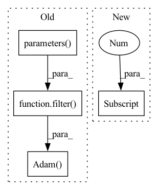

Pattern ID :39417

Before Change
// Set optimizer
if opt.optimizer is "Adam":
optimizer = torch.optim.Adam(filter(lambda p: p.requires_grad, model.parameters()), lr=1e-4, weight_decay=5e-4)
else:
optimizer = torch.optim.SGD(filter(lambda p: p.requires_grad, model.parameters()), lr=1e-3, momentum=.9, weight_decay=5e-4)
// Set scheduler
After Change
p.requires_grad = False
elif epoch == 1:
for i, (name, p) in enumerate(model.named_parameters()):
if int(name.split(".")[1]) < 75: // if layer < 75
p.requires_grad = True
ui = -1
In pattern: SUPERPATTERN
Frequency: 3
Non-data size: 4
Instances
Fragment ID: 111891083
Project Name: nightsnack/yolobile
Commit Name: b07ee41867e87aff9847d5f4a4e1de9ac464b529
Time: 2018-11-27
Author: glenn.jocher@ultralytics.com
File Name: train.py
M Class Name: AnonimousClass
N Class Name: AnonimousClass
M Method Name: main(1)
N Method Name: main(1)
M Parent Class:
N Parent Class:
M File Name: train.py
N File Name: train.py
M Start Line: 49
M End Line: 133
N Start Line: 51
N End Line: 141
'>
Before Change
lr=args.learning_rate,
)
else:
optimizer = torch.optim.Adam(
filter(lambda p: p.requires_grad, self.model.parameters()),
lr=args.learning_rate,
weight_decay=args.weight_decay,
amsgrad=True,
)
epoch_loss = []
for epoch in range(args.epochs):
batch_loss = []
After Change
labels = labels.numpy()
y_pred = self.model.train_on_batch(x=x, y=labels)
loss = y_pred[0]
accuracy = y_pred[1]
batch_loss.append(loss)
epoch_loss.append(sum(batch_loss) / len(batch_loss))
logging.info(
'>
Fragment ID: 111891081
Project Name: fedml-ai/fedml
Commit Name: 51350e5aa8f340f92f5a5ff1f2f88cd9ab1fe47f
Time: 2022-08-14
Author: alexliang.kh@gmail.com
File Name: python/examples/cross_silo/tf-mqtt_s3_fedavg_mnist_lr_example/tf_model_trainer_classification.py
M Class Name: TfModelTrainerCLS
N Class Name: TfModelTrainerCLS
M Method Name: train(4)
N Method Name: train(4)
M Parent Class: ClientTrainer
N Parent Class: ClientTrainer
M File Name: python/examples/cross_silo/tf-mqtt_s3_fedavg_mnist_lr_example/tf_model_trainer_classification.py
N File Name: python/examples/cross_silo/tf-mqtt_s3_fedavg_mnist_lr_example/tf_model_trainer_classification.py
M Start Line: 16
M End Line: 59
N Start Line: 16
N End Line: 44
'>
Before Change
lr=args.learning_rate,
)
else:
optimizer = torch.optim.Adam(
filter(lambda p: p.requires_grad, self.model.parameters()),
lr=args.learning_rate,
weight_decay=args.weight_decay,
amsgrad=True,
)
epoch_loss = []
for epoch in range(args.epochs):
batch_loss = []
After Change
labels = labels.numpy()
y_pred = self.model.train_on_batch(x=x, y=labels)
loss = y_pred[0]
accuracy = y_pred[1]
batch_loss.append(loss)
epoch_loss.append(sum(batch_loss) / len(batch_loss))
logging.info(
'>
Fragment ID: 111891085
Project Name: fedml-ai/fedml
Commit Name: 9e66b6521a89e76f568a18fc69f0e6cf7c3c6166
Time: 2022-08-14
Author: alex.gpt.llm@gmail.com
File Name: python/examples/cross_silo/tf-mqtt_s3_fedavg_mnist_lr_example/tf_model_trainer_classification.py
M Class Name: TfModelTrainerCLS
N Class Name: TfModelTrainerCLS
M Method Name: train(4)
N Method Name: train(4)
M Parent Class: ClientTrainer
N Parent Class: ClientTrainer
M File Name: python/examples/cross_silo/tf-mqtt_s3_fedavg_mnist_lr_example/tf_model_trainer_classification.py
N File Name: python/examples/cross_silo/tf-mqtt_s3_fedavg_mnist_lr_example/tf_model_trainer_classification.py
M Start Line: 16
M End Line: 59
N Start Line: 16
N End Line: 44